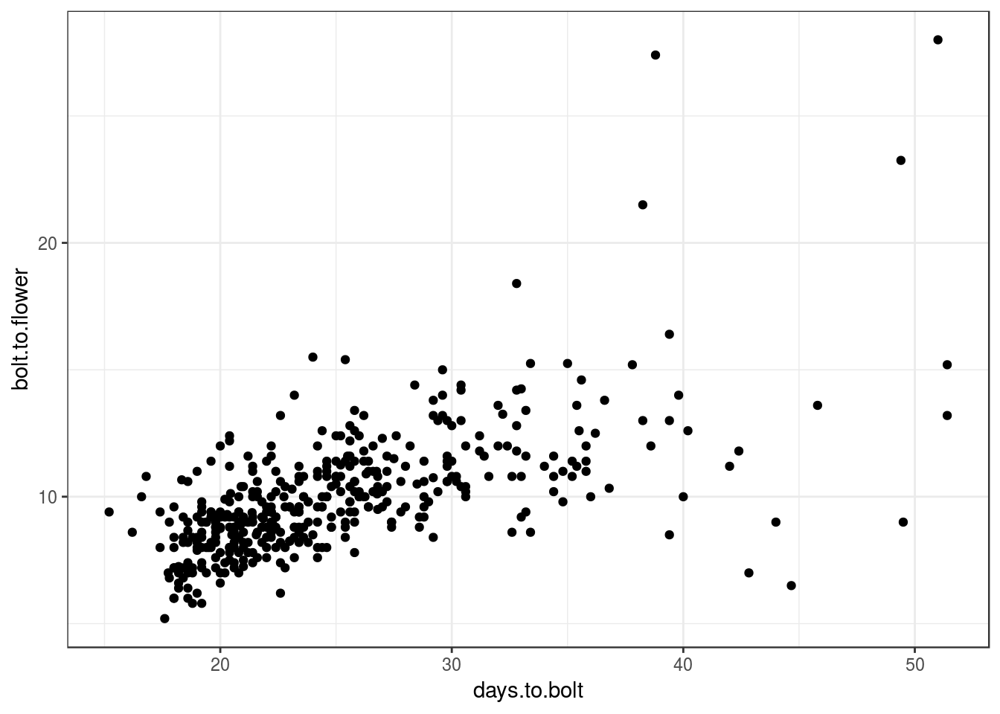
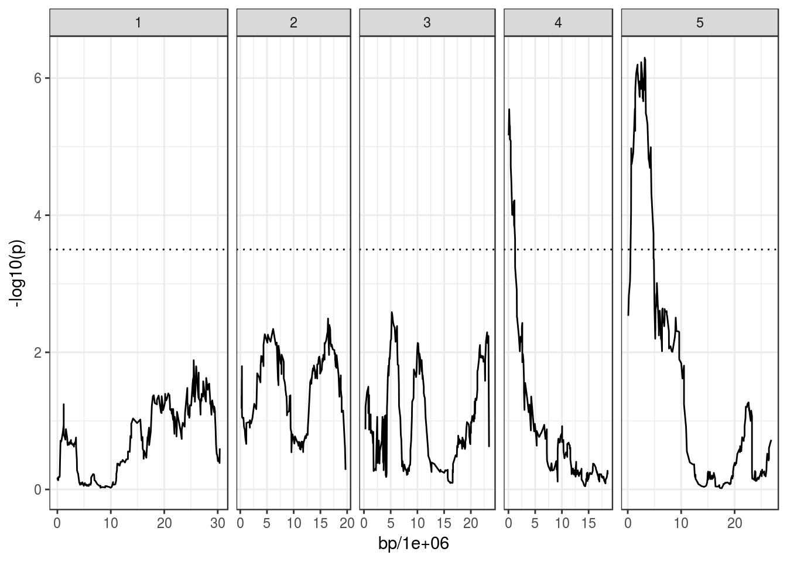
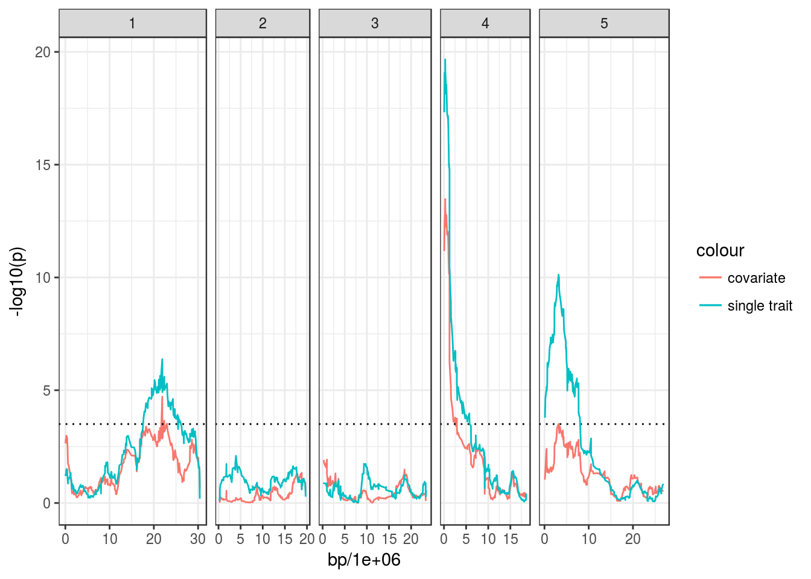
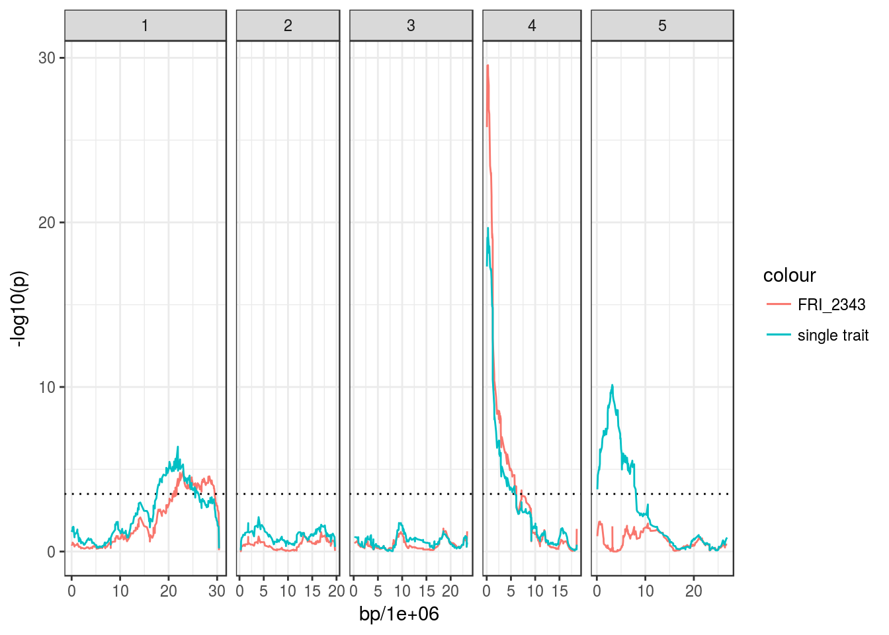
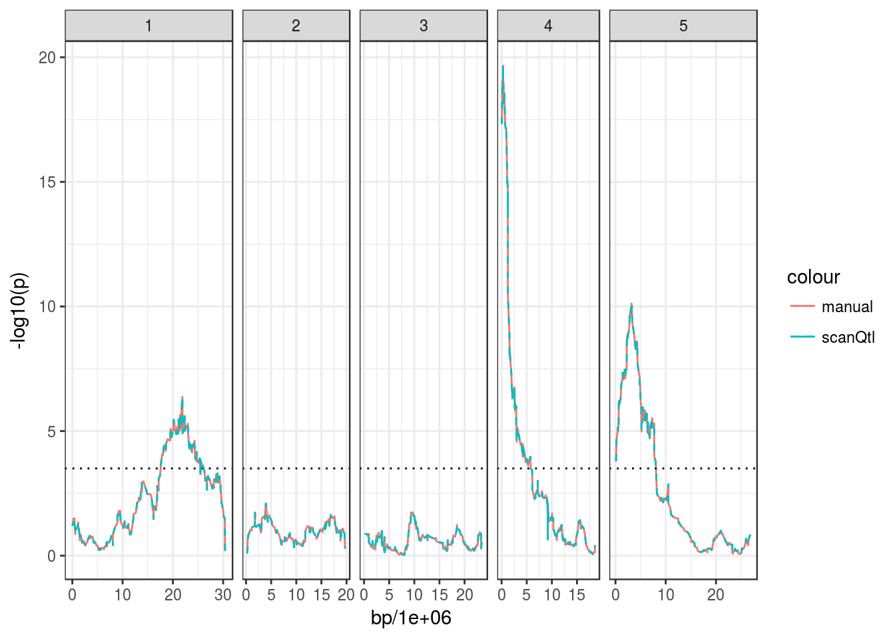
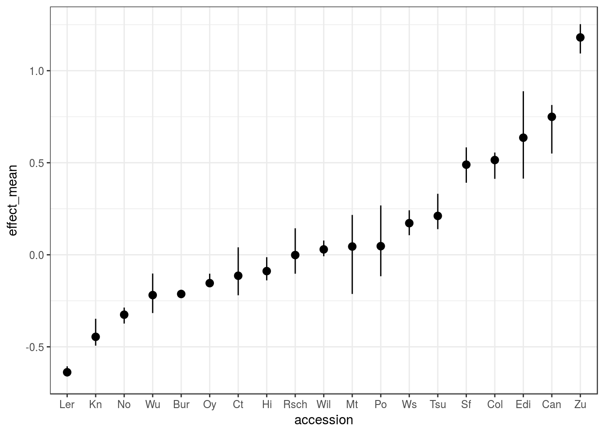
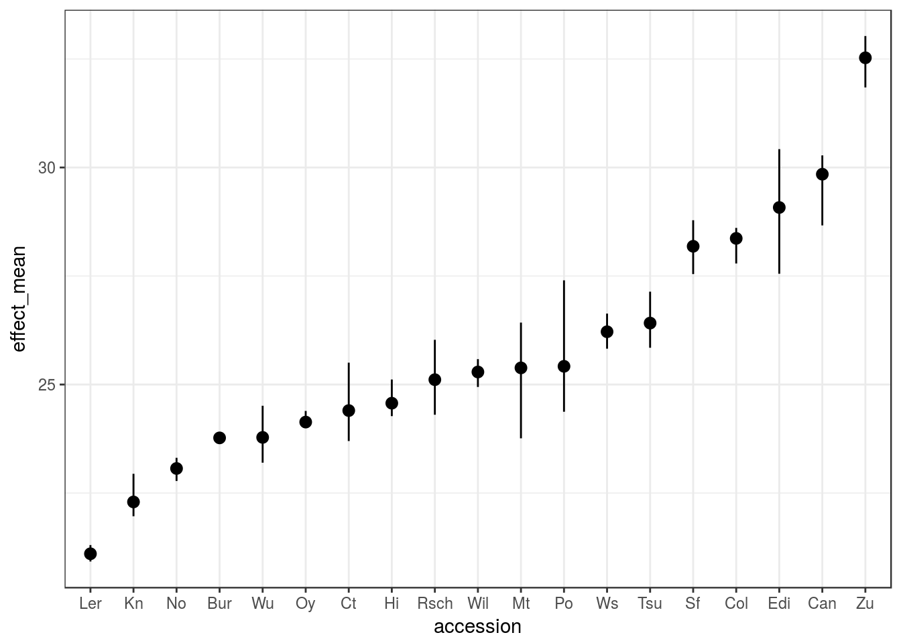
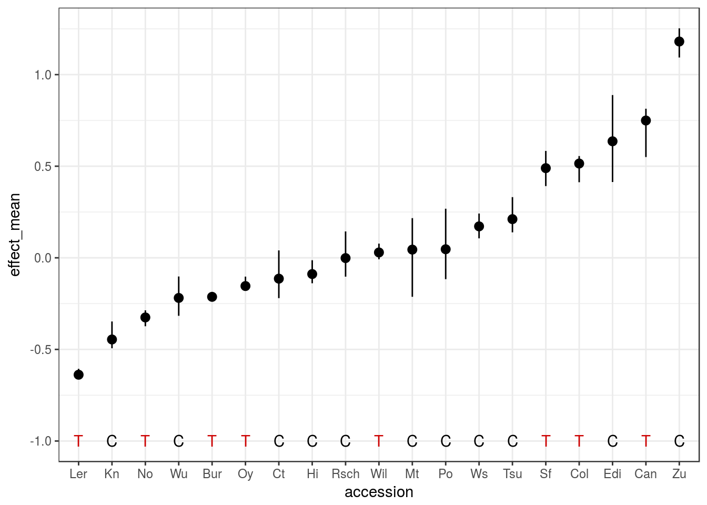
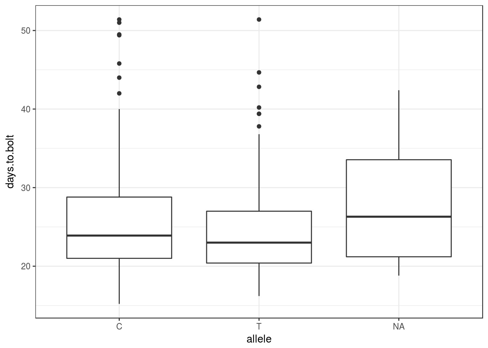

Introduction to MagicHelpR
Hugo Tavares
2018-02-21
This is a package to perform QTL mapping on the Arabidopsis MAGIC lines, described in Kover P .. Mott R (2009). It was mostly written for personal convenience, and it follows the same method implemented in the scripts available on that website.
The package allows you to download the genotype data from the public server, and convert it to PLINK format in case that is useful for other analysis. A small collection of functions allows to estimate the genotype probability matrix (using the happy.hbrem package) and run association tests between a phenotype of interest and each marker, using fixed effects linear models. This can be extended with more complex models, by accessing the genotype and phenotype data stored in a structured object created by the package.
This vignette introduces the main functions in the package, using a workflow with example phenotype data downloaded from the MAGIC website.
We start by loading the package, which also loads the package dplyr, on which it uses several functions from. Through the rest of this vignette, dplyr functions are often used, so it’s best if you’re familiar with their use and the use of “pipes” %>% (see dplyr introduction)
library(MagicHelpR)## Loading required package: dplyr##
## Attaching package: 'dplyr'## The following objects are masked from 'package:stats':
##
## filter, lag## The following objects are masked from 'package:base':
##
## intersect, setdiff, setequal, union## Loading required package: tidyrlibrary(tidyverse)## ── Attaching packages ────────────────────────────────── tidyverse 1.2.1 ──## ✔ ggplot2 2.2.1.9000 ✔ purrr 0.2.4
## ✔ tibble 1.4.2 ✔ stringr 1.2.0
## ✔ readr 1.1.1 ✔ forcats 0.2.0## ── Conflicts ───────────────────────────────────── tidyverse_conflicts() ──
## ✖ dplyr::filter() masks stats::filter()
## ✖ dplyr::lag() masks stats::lag()Downloading the data
For convenience, a function is included to download the genotype data. There is an option in the function that also calls the function tidyArabMagic(), which “tidies” that data (this mostly converts things to different formats and also combines the separate chromosome files into a single file, for convenience). Another option, which is set to FALSE by default, is to download example phenotype data.
downloadArabMagic('~/temp/magic_intro/', tidy = TRUE, example_data = TRUE)Genotype probability matrix
The idea with the MAGIC lines is to use information about the founder population when doing the association mapping. Therefore, one needs to infer from which of the 19 founder accessions, each marker allele derives from. This “reconstruction” step can be performed using the function magicFounderReconstruct(), which uses the functions from the happy.hbrem package.
The function requires a directory where all the genotype files are stored. Note that these files should preferably have been produced by the tidyArabMagic() function to ensure data formats are correct.
magic_geno <- magicFounderReconstruct(snp_dir = "~/temp/magic_intro")## mindist: 1e-05
## datafile /home/hugo/temp/magic_intro/all_chr.MAGIC.happy.data allelesfile /home/hugo/temp/magic_intro/all_chr.MAGIC.happy.alleles gen 7
## genotype phase: unknown
## Reading phenotype and genotype data from ped file /home/hugo/temp/magic_intro/all_chr.MAGIC.happy.data
## Number of individuals: 703
## Number of markers: 1259
## Number of strains: 19
## Use Parents: no
## Number of subjects with two parents: 0
## Number of parents in nuclear families: 0
## null model mean nan var nan
## assuming haploid(inbred) genotypes
## datafile /home/hugo/temp/magic_intro/all_chr.MAGIC.happy.data allelesfile /home/hugo/temp/magic_intro/all_chr.MAGIC.happy.alleles gen 7This function returns an object of class “MagicGen”. This object contains the following:
- a table with all the marker names and their locations. This can be accessed with he function
getMarkers(). - a list of SNP genotypes for each marker. This can be accessed with the function
getGenotypes()adding the optiontype = "allele". - a list of genotype probabilities for each marker. This can be access with the function
getGenotypes(). - a table with SNP genotypes of the founder accessions.
Here are some examples of using these functions to access information from this.
If we want to see marker information
head(getMarkers(magic_geno))## marker map bp chromosome
## 1 MN1_29291 0.1220500 29291 1
## 2 MN1_29716 0.1239917 29757 1
## 3 MN1_112907 0.4704500 112907 1
## 4 MASC03771 0.7275250 174605 1
## 5 MN1_197787 0.8241167 197787 1
## 6 MN1_340810 1.4200458 340810 1If we want to see SNP allele genotypes for marker “MN1_29291”:
head(getGenotypes(magic_geno, type = "allele")$MN1_29291)## MAGIC.1 MAGIC.10 MAGIC.94 MAGIC.534 MAGIC.692 MAGIC.693
## "G" "G" "A" "A" "A" "G"If we want to see the genotype probability matrix for that marker:
head(getGenotypes(magic_geno, type = "probability")$MN1_29291)## Bur Can Col Ct Edi
## MAGIC.1 4.009410e-08 1.598693e-02 7.209811e-01 3.180553e-07 1.807606e-03
## MAGIC.10 4.008952e-08 8.593144e-01 1.695137e-02 2.310732e-07 1.270743e-03
## MAGIC.94 8.577679e-02 1.855517e-08 1.855772e-08 2.260272e-02 1.351491e-07
## MAGIC.534 1.085882e-01 1.054246e-07 2.921143e-07 4.570506e-01 1.870980e-08
## MAGIC.692 8.578111e-02 1.855118e-08 1.855373e-08 2.260383e-02 1.351510e-07
## MAGIC.693 2.743700e-07 1.094609e-02 1.094814e-02 4.017387e-08 2.846193e-02
## Hi Kn Ler Mt No
## MAGIC.1 1.807741e-03 4.009246e-08 1.809008e-03 4.465485e-02 6.176561e-02
## MAGIC.10 1.265560e-03 4.016395e-08 1.265559e-03 1.695137e-02 1.695137e-02
## MAGIC.94 3.733691e-07 4.336636e-02 1.676746e-07 1.855771e-08 1.855772e-08
## MAGIC.534 1.871106e-08 1.085880e-01 1.872444e-08 2.921143e-07 2.921143e-07
## MAGIC.692 3.733832e-07 4.336851e-02 1.676779e-07 1.855373e-08 1.855373e-08
## MAGIC.693 3.018148e-02 2.534173e-07 8.000111e-01 1.094814e-02 1.094814e-02
## Oy Po Rsch Sf Tsu
## MAGIC.1 4.013616e-08 4.013616e-08 4.465627e-02 4.009411e-08 1.808736e-03
## MAGIC.10 4.008951e-08 4.008951e-08 1.695137e-02 4.008951e-08 1.265559e-03
## MAGIC.94 4.916271e-02 4.916271e-02 1.855771e-08 7.499277e-01 1.676687e-07
## MAGIC.534 1.085906e-01 1.085906e-01 2.921143e-07 1.085882e-01 1.872444e-08
## MAGIC.692 4.916512e-02 4.916512e-02 1.855373e-08 7.499153e-01 1.676720e-07
## MAGIC.693 5.716623e-07 5.716623e-07 1.094814e-02 2.744392e-07 4.281773e-02
## Wil Ws Wu Zu
## MAGIC.1 4.465610e-02 2.463717e-02 1.770895e-02 1.771944e-02
## MAGIC.10 1.695137e-02 1.695137e-02 1.695685e-02 1.695262e-02
## MAGIC.94 1.855771e-08 1.855771e-08 1.857383e-08 1.859582e-08
## MAGIC.534 2.921143e-07 2.067150e-06 1.215602e-07 1.213665e-07
## MAGIC.692 1.855373e-08 1.855373e-08 1.856985e-08 1.859184e-08
## MAGIC.693 1.094814e-02 1.094656e-02 1.094622e-02 1.094622e-02And finally, if we want to see what the founder genotypes were in that marker:
getFounderGenotypes(magic_geno)$MN1_29291## accession marker allele
## 1 Bur MN1_29291 A
## 2 Can MN1_29291 G
## 3 Col MN1_29291 G
## 4 Ct MN1_29291 A
## 5 Edi MN1_29291 G
## 6 Hi MN1_29291 G
## 7 Kn MN1_29291 A
## 8 Ler MN1_29291 G
## 9 Mt MN1_29291 G
## 10 No MN1_29291 G
## 11 Oy MN1_29291 A
## 12 Po MN1_29291 A
## 13 Rsch MN1_29291 G
## 14 Sf MN1_29291 A
## 15 Tsu MN1_29291 G
## 16 Wil MN1_29291 G
## 17 Ws MN1_29291 G
## 18 Wu MN1_29291 G
## 19 Zu MN1_29291 GAdding phenotypes to the analysis
To perform the QTL analysis, you should create a table with phenotypes. This should be a regular data.frame, with one of the columns containing the MAGIC line IDs.
In this example, we read the phenotype table that was downloaded before:
pheno <- read.table('~/temp/magic_intro/magic_phenotype_example.txt', header = T)
head(pheno)## SUBJECT.NAME bolt.to.flower days.to.bolt days.to.germ
## 1 MAGIC.10 10.0 40.0 6.0
## 2 MAGIC.94 10.0 24.6 6.0
## 3 MAGIC.95 7.0 20.2 6.0
## 4 MAGIC.96 10.0 36.0 6.0
## 5 MAGIC.97 10.2 25.2 9.4
## 6 MAGIC.98 10.6 27.8 6.0To add this information to the “MagicGen” object we use the function addPhenotypes():
# Pass the phenotype data.frame and specify which column contains the MAGIC line IDs
magic_phen <- addPhenotypes(magic_geno, pheno, "SUBJECT.NAME")This returns an object of class “MagicGenPhen”, which is very similar to the one from before, but with phenotype information added to it. Also, the genotypes are kept only for those individuals that had a phenotype.
magic_phen## Object of class MagicGenPhen
## 426 MAGIC lines with a phenotype.
## There are 3 phenotypes:
## bolt.to.flower days.to.bolt days.to.germ
## Using genotypes for 1258 markers.The reason to separate these two objects, is that the “MagicGen” object only has to be created once, and different tables of phenotypes can then be added to it later on. For example, the user might consider to create this object once and then save it as an .rds object, to use later on in future analysis:
saveRDS(magic_geno, '~/temp/magic_intro/magic_genotype_probabilities.rds')In case you want to create a “MagicGenPhen” object (containing genotypes and phenotypes) in one go, you can pass the phenotype information to the magicFounderReconstruct() function:
magic_phen2 <- magicFounderReconstruct(snp_dir = "~/temp/magic_intro/",
phenotypes = pheno, id = "SUBJECT.NAME")Performing standard QTL mapping
The function scanQtl() performs a basic association analysis using an F-test to compare two linear models, one with the genotype probabilities for each founder accession as explanatory variables and a null model with no explanatory variables (only an intercept).
For example:
# QTL scan for days.to.bolt trait
bolt_qtl <- scanQtl(magic_phen, "days.to.bolt")## F-test comparing the models:
## H1: days.to.bolt ~ GEN
## H0: days.to.bolt ~ 1## Elapsed time: 30 secondsThe function supports the use of multiple cores (not supported on Windows), which can speed the computation:
# QTL scan for days.to.bolt trait
bolt_qtl <- scanQtl(magic_phen, "days.to.bolt", cores = 2)
head(bolt_qtl)This returns a standard data.frame object, and it can be plotted, for example with ggplot2:
# Load the library and change the default theme
library(ggplot2); theme_set(theme_bw())
# Make the plot, with an horizontal line at 3.5, which is suggested in Kover et al. (2009)
ggplot(bolt_qtl, aes(bp/1e6, -log10(p))) +
geom_line() +
facet_grid(~ chromosome, scales = "free_x", space = "free_x") +
geom_hline(yintercept = 3.5, linetype = "dotted")## Warning: Removed 2 rows containing missing values (geom_path).
You can also get the R^2 of linear model for the peak markers, which can give an indication of the variance explained by them. For example, the peak marker on Chr4, in the Frigida gene:
bolt_qtl %>% arrange(p) %>% slice(1)## # A tibble: 1 x 10
## marker map bp chromosome f df1 df2 p r2_h1 r2_h0
## <I(chr)> <dbl> <dbl> <I(chr)> <dbl> <dbl> <dbl> <dbl> <dbl> <dbl>
## 1 FRI_2343 1.13 270862 4 8.87 18.0 407 2.16e⁻²⁰ 0.250 0The r2_h1 column contains the R^2 of the linear model for the alternative hypothesis tested, suggesting that ~25% of the variance is explained by that SNP.
Custom models
The scanQtl() function allows to fit more complex, customised models. You can explicitly specify these models using the same sintax used for the lm() function in the base R package.
Using covariate traits
For example, the traits days.to.bolt and bolt.to.flower are correlated with each other:
qplot(days.to.bolt, bolt.to.flower, data = pheno)
Indeed, the QTL scan for the two traits picks similar QTL:
flower_qtl <- scanQtl(magic_phen, "bolt.to.flower", cores = 2)## F-test comparing the models:
## H1: bolt.to.flower ~ GEN
## H0: bolt.to.flower ~ 1## Elapsed time: 22 secondsggplot(flower_qtl, aes(bp/1e6, -log10(p))) +
geom_line() +
facet_grid(~ chromosome, scales = "free_x", space = "free_x") +
geom_hline(yintercept = 3.5, linetype = "dotted")## Warning: Removed 2 rows containing missing values (geom_path).
But let’s say we wanted to find QTL that explain some of the residual variation that might exist when the correlation between the two traits is taken into account. For this, we could use one of them as a covariate in the model, for example:
# Run QTL scan for "days.to.bolt" but adding "bolt.to.flower" as a covariate
bolt_cov_qtl <- scanQtl(magic_phen, "days.to.bolt",
covariates = "bolt.to.flower")## F-test comparing the models:
## H1:days.to.bolt ~ GEN + bolt.to.flower
## H0:days.to.bolt ~ bolt.to.flower## Elapsed time: 37 seconds# Make plot
ggplot(bolt_cov_qtl, aes(bp/1e6, -log10(p))) +
geom_line(aes(colour = "covariate")) +
facet_grid(~ chromosome, scales = "free_x", space = "free_x") +
geom_hline(yintercept = 3.5, linetype = "dotted") +
geom_line(data = bolt_qtl, aes(colour = "single trait"))## Warning: Removed 2 rows containing missing values (geom_path).
## Warning: Removed 2 rows containing missing values (geom_path).
We can see that the QTL on Chr4 is still significant, even when the correlation between the two traits is taken into account, whereas those on Chr1 and Chr5 are less convincing.
Using SNP covariates
We might also want to explore whereas different SNPs explain common variance in our trait.
To explore this hypothesis, we can also use other markers as covariates in the QTL model:
# Run QTL scan conditional on the peak marker on Chr5
peak5 <- bolt_qtl %>% filter(chromosome == 5) %>% arrange(p) %>% slice(1) %>% .$marker
bolt_snp_qtl <- scanQtl(magic_phen, "days.to.bolt",
marker_cov = peak5)## F-test comparing the models:
## H1:days.to.bolt ~ GEN + MN5_3177504
## H0:days.to.bolt ~ MN5_3177504## Elapsed time: 33 seconds# Plot
ggplot(bolt_snp_qtl, aes(bp/1e6, -log10(p))) +
geom_line(aes(colour = "FRI_2343")) +
facet_grid(~ chromosome, scales = "free_x", space = "free_x") +
geom_hline(yintercept = 3.5, linetype = "dotted") +
geom_line(data = bolt_qtl, aes(colour = "single trait"))## Warning: Removed 2 rows containing missing values (geom_path).
## Warning: Removed 2 rows containing missing values (geom_path).
Since the two other QTL on Chr1 and Chr4 remain after taking into account the contribution of the QTL on Chr5, it suggests that they explain extra phenotypic variance not captured by that QTL.
Custom models
(sorry, proper example to be added…)
But essentially you can use the same syntax used in the lm() function in the base R package, to define the null and alternative hypothesis of the models being compared (these are the options h1 and h0 in the scanQtl() function). The genotype term is specified as GEN. The message printed when running the above scanQtl() calls gives examples of how the models are specified internally.
This allows for example running models using interaction terms, etc.
Even more customised models
If you feel limited by the capability of the scanQtl() function, you can make your own implementation, by accessing the data in the MagicGenPhen object. For example, here is a “manual” implementation of the basic QTL scan:
phenotypes <- getPhenotypes(magic_phen)
genotypes <- getGenotypes(magic_phen) # by default returns genotype probabilities
markers <- getMarkers(magic_phen)
# Run the association test for each marker and retrieve the p-value
pvals <- sapply(genotypes, function(GEN, PHEN){
# Fit the alternative
fit1 <- lm(PHEN ~ GEN)
# Fit the null
fit0 <- lm(PHEN ~ 1)
# Perform the F-test and retrieve the P-value
anova(fit0, fit1)$`Pr(>F)`[2]
}, PHEN = phenotypes$days.to.bolt)
# Merge with marker positions
pvals <- cbind(markers, p = pvals)
# Plot
ggplot(pvals, aes(bp/1e6, -log10(p))) +
geom_line(aes(colour = "manual")) +
facet_grid(~ chromosome, scales = "free_x", space = "free_x") +
geom_hline(yintercept = 3.5, linetype = "dotted") +
geom_line(data = bolt_qtl, aes(colour = "scanQtl"), linetype = "dashed")## Warning: Removed 2 rows containing missing values (geom_path).
## Warning: Removed 2 rows containing missing values (geom_path).
Estimating QTL effect sizes
Once a significant QTL peak is identified, we might be interested in what the predicted effect of each allele is in our phenotype. Because the MAGIC line genotypes in each marker are assigned to each parent as a probability, this has to be done by a probabilistic “phenotype imputation”. Details of the method can be found in Kover P .. Mott R (2009), but essentially, we can use the function estimateFounderEffect() to achieve this goal:
# Predicted effect of QTL on chr5 identified previously
peak5_effect <- estimateFounderEffect(magic_phen, "days.to.bolt", peak5)## Warning: Column `accession` joining factor and character vector, coercing
## into character vectorhead(peak5_effect)## # A tibble: 6 x 7
## accession effect_mean effect_up effect_lo n marker allele
## <fct> <dbl> <dbl> <dbl> <dbl> <chr> <chr>
## 1 Bur -0.213 -0.196 -0.233 37.0 MN5_3177504 T
## 2 Can 0.748 0.814 0.550 7.00 MN5_3177504 T
## 3 Col 0.517 0.555 0.439 15.0 MN5_3177504 T
## 4 Ct -0.119 0.0366 -0.232 16.0 MN5_3177504 C
## 5 Edi 0.635 0.895 0.373 9.00 MN5_3177504 C
## 6 Hi -0.0874 -0.0254 -0.130 37.0 MN5_3177504 CThis returns a data.frame with the predicted contribution of each accession to the phenotype. Because this is probabilistic in nature, the method relies on repeating this estimate several times (500 by default). By default, the estimateFounderEffect() function returns a summary of these probabilistic estimates with a mean and lower and upper “confidence interval” for the estimate.
By default, it also standardizes the trait as z-scores (i.e. subtracts the mean trait value observed in the sampled individuals from the estimate and divides by the observed standard deviation - in other words, the values can be read as “standard deviations away from the mean”).
The result can be plotted like so:
ggplot(peak5_effect, aes(accession, effect_mean)) +
geom_pointrange(aes(ymin = effect_lo, ymax = effect_up))
We can see from this example that, at this locus:
- The Zu allele should result in later-flowering ~1.5 SD above the mean
- The Ler allele should result in early-flowering ~0.7 SD below the mean
The errorbars also show that some estimates are better than others.
If you prefer to have the effect size in the units of your trait, then you could achieve a similar result by:
estimateFounderEffect(magic_phen, "days.to.bolt", peak5, standardised = FALSE) %>%
ggplot(aes(accession, effect_mean)) +
geom_pointrange(aes(ymin = effect_lo, ymax = effect_up))## Warning: Column `accession` joining factor and character vector, coercing
## into character vector
The plot is essentially the same, but now the scale can be read in the original units of “days.to.flower”, so between ~20 days for Ler and ~32 days for Zu.
Another trick that can be used is to add what the SNP allele is for each of the founder accessions. This is also available on the output from estimateFounderEffect() function, and can be visualised like so:
ggplot(peak5_effect, aes(accession, effect_mean)) +
geom_pointrange(aes(ymin = effect_lo, ymax = effect_up)) +
geom_text(aes(y = -1, label = allele, colour = allele)) +
scale_color_manual(values = c("black", "red3")) +
theme(legend.position = "none")
(note that you could also get the founder genotypes with getFounderGenotypes(magic_phen)[[peak5]])
This nicely shows that the effect of the SNP allele is not that well correlated with the predicted effect of the founder allele. For example, accessions Kn and Zu have very different predicted flowering time contributions, but they both have the same SNP genotype at this marker.
Another way to consider this, is to group the MAGIC lines by their SNP allele and plot the phenotype distributions for this. This can be achieved by another function called inferMagicFounder(), which assigns each MAGIC line to a single founder, based on some probability threshold (0.5 by default).
peak5_inferred <- inferMagicFounder(magic_phen, peak5)## 423 MAGIC lines were attributed to exactly one founder.## 3 MAGIC lines were not attributed a founder.## 0 MAGIC lines were attributed more than one founder.head(peak5_inferred)## magic founder bolt.to.flower days.to.bolt days.to.germ allele
## 1 MAGIC.10 Zu 10.0 40.0 6.0 C
## 2 MAGIC.101 Mt 11.2 21.4 6.2 C
## 3 MAGIC.102 Kn 7.0 19.4 6.0 C
## 4 MAGIC.103 Col 10.0 23.6 6.0 T
## 5 MAGIC.104 Wil 10.4 30.4 6.0 T
## 6 MAGIC.105 Sf 13.0 39.4 7.0 TThis table thus assigns each MAGIC line to one founder only, if the probability of being that founder is greater than 50%. The threshold can be increased, and this usually results in more MAGIC lines not having an assigned parental genotype.
This table also returns the SNP genotypes for that marker. Therefore, we can produce the phenotype distribution grouped by SNP allele:
ggplot(peak5_inferred, aes(allele, days.to.bolt)) +
geom_boxplot()
From this we can see that the average (or median) phenotype of the two alleles (C and T) are not that different, consistent with a lack of correlation in the predicted accession effects above.